Inmobiliaria JMK®Bienes raíces en Costa Rica
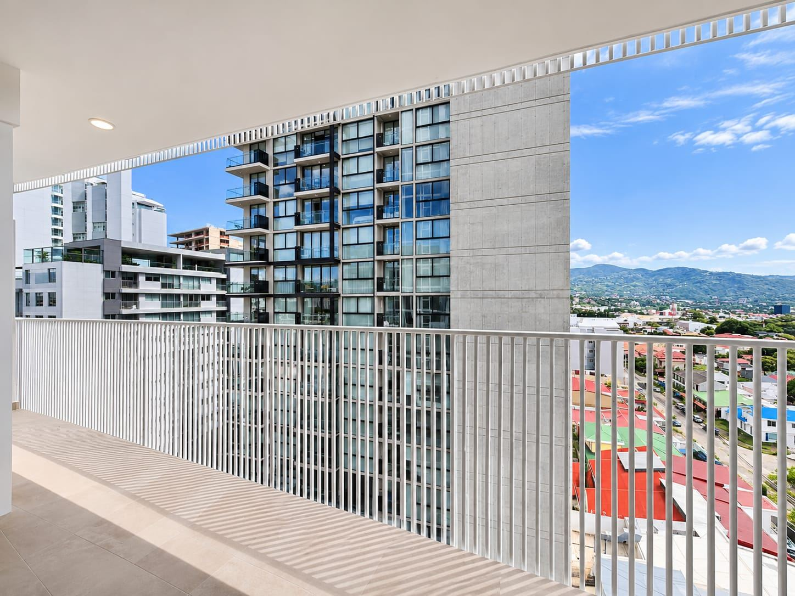
Viva en una de las zonas más exclusivas y cotizadas de Rohrmoser. Este moderno apartamento combina diseño, funcionalidad y una ubicación privilegiada a pasos de parques, restaurantes y comercios.
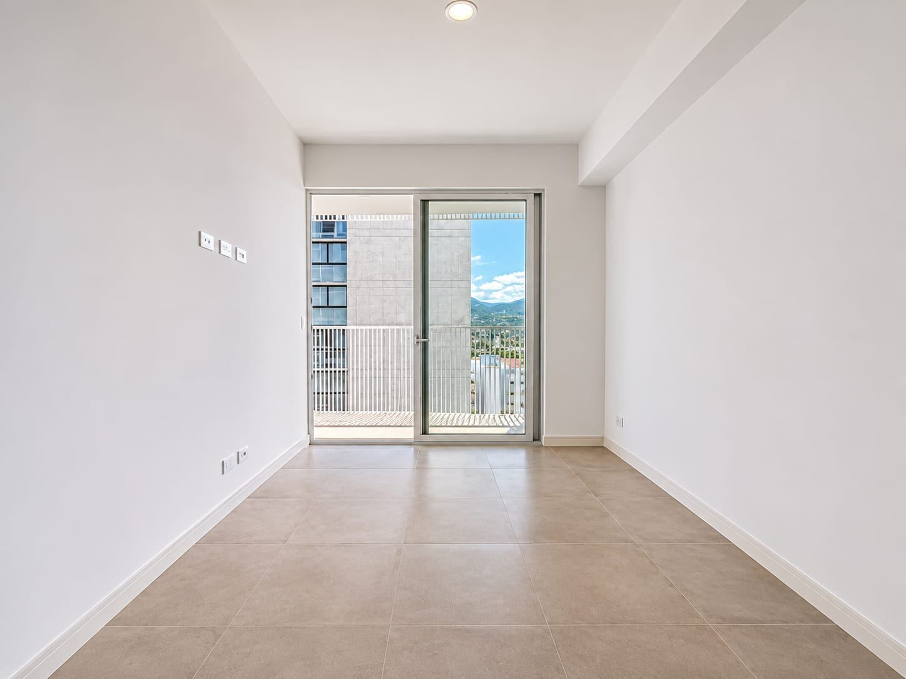
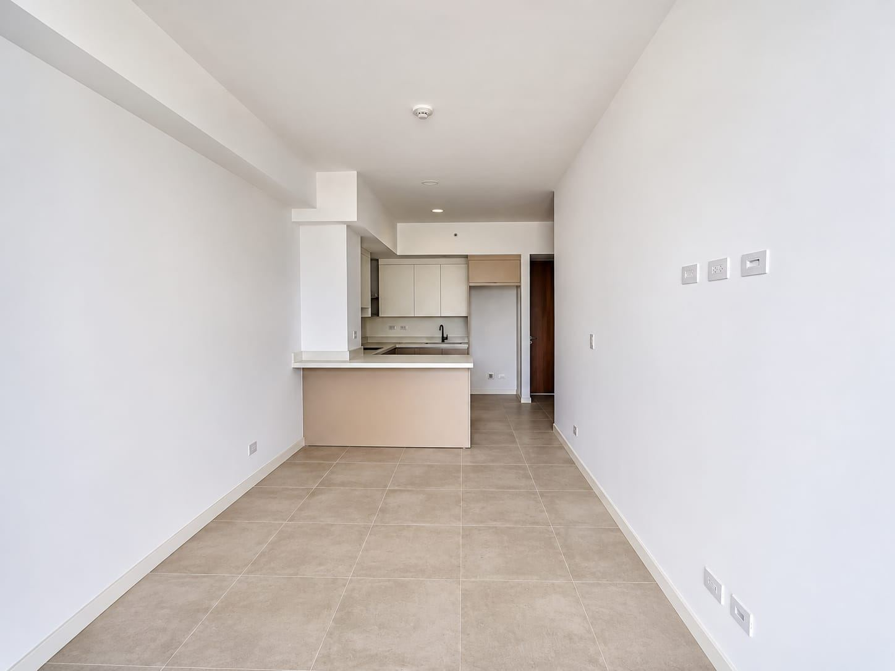
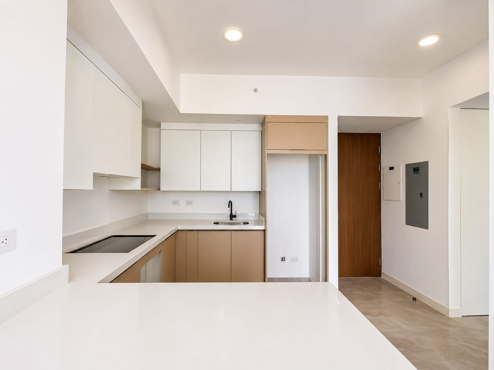
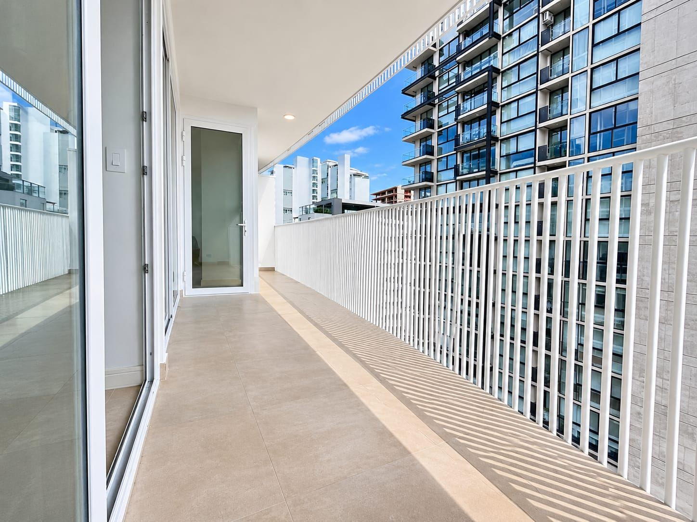
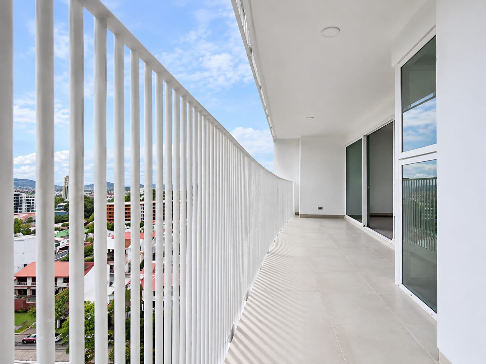
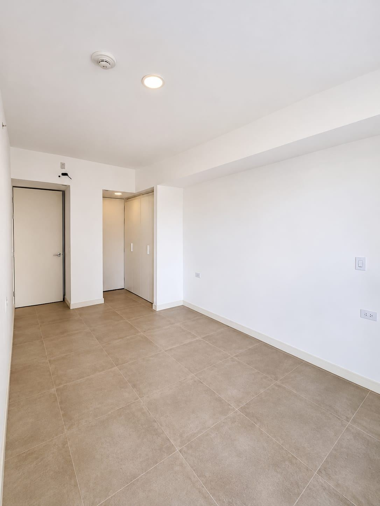
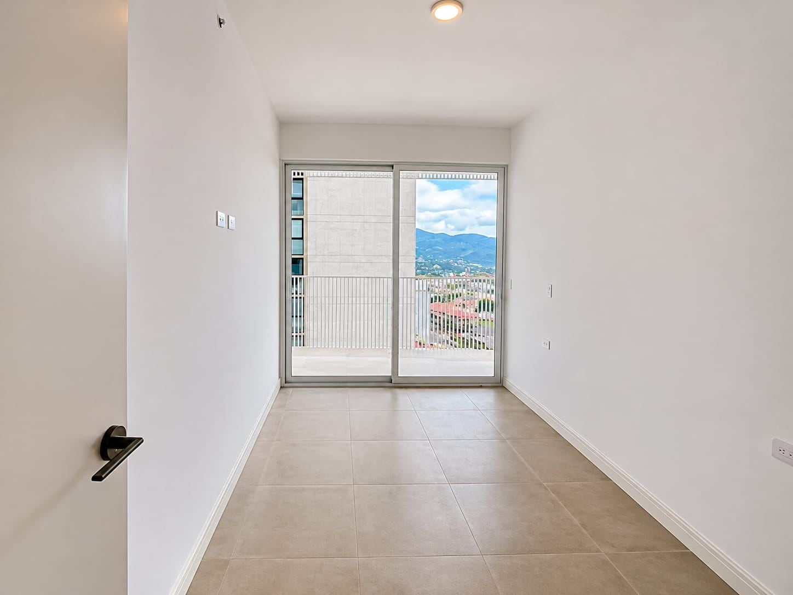
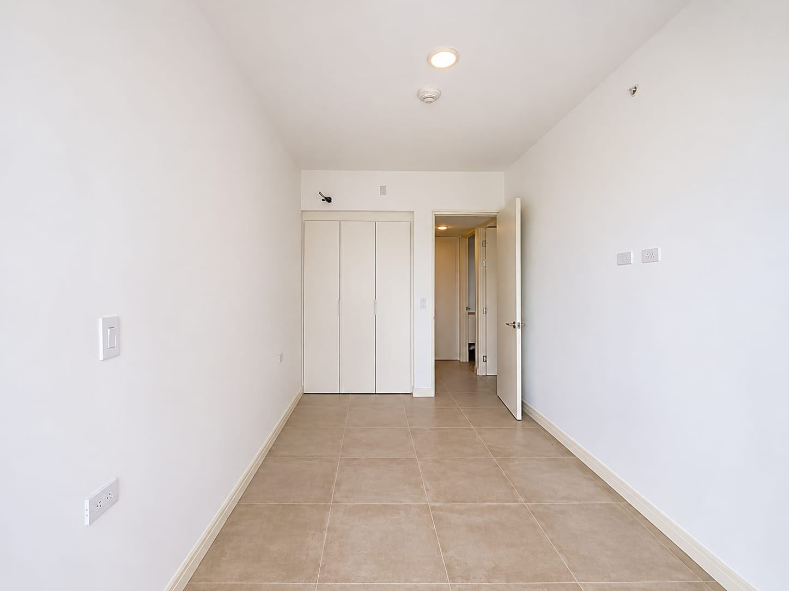
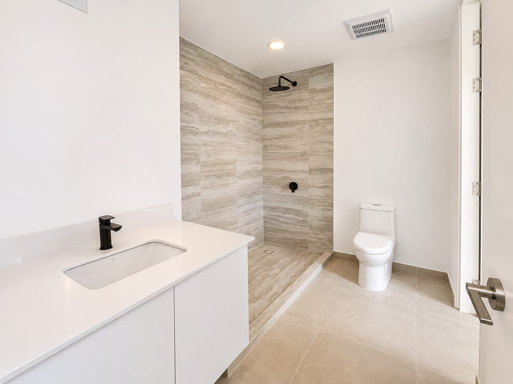
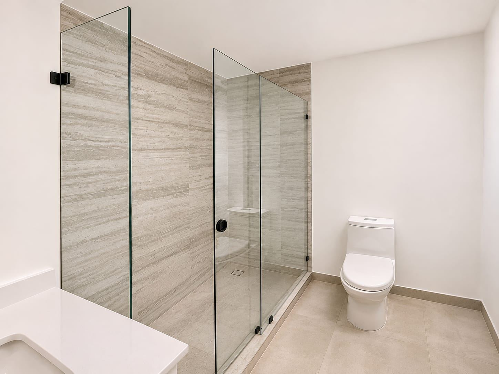